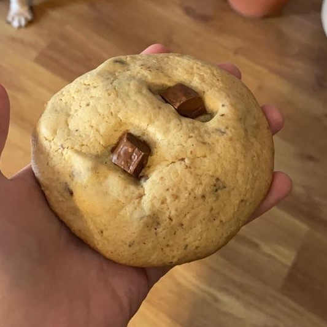
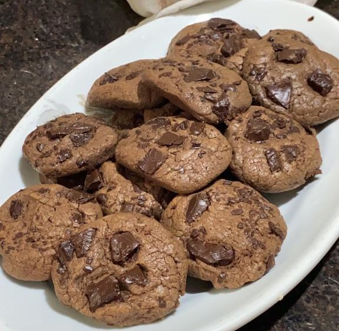
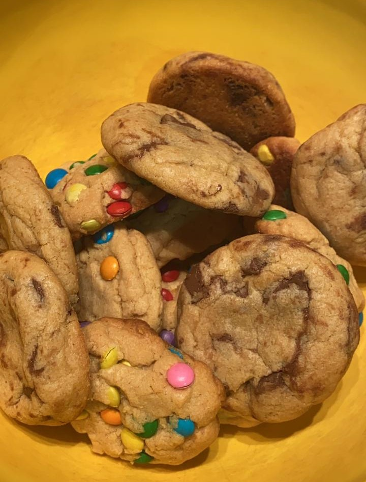
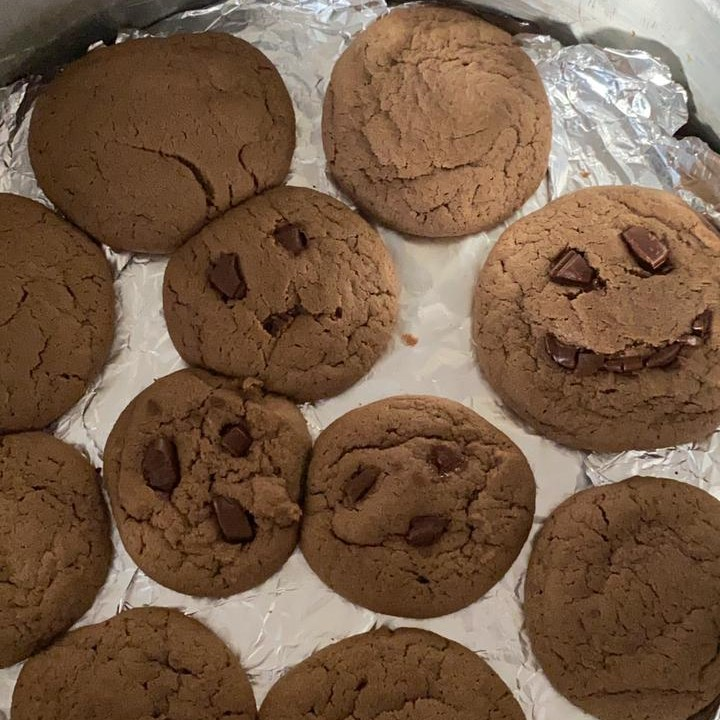
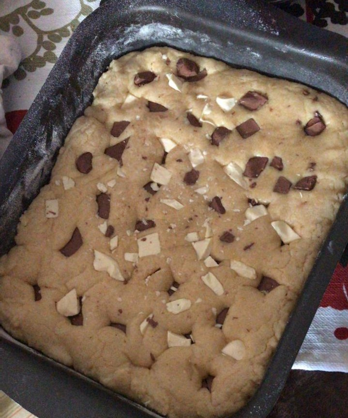
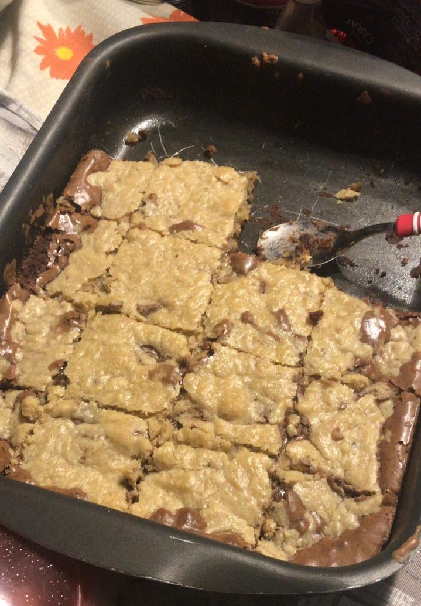

essa é a "receita padrão" dos cookies que eu faço, as vezes eu acrescento ou tiro alguma coisa, mas não muda o resultado :)
Ingredientes
100g de manteiga em temperatura ambiente 🧈
1/2 xícara de açúcar refinado 🤍
3/4 xícara de açúcar mascavo 🤎
1 ovo 🥚
1 e 3/4 de xícara de farinha de trigo 🌾
1 colher (chá) de fermento em pó 🥄
chocolate picado (o tipo vai de sua preferência, normalmente uso uma barra) 🍫
1 colher de chá de essência/extrato de baunilha 🌼
**para fazer a massa do cookie de chocolate, acrescente 2 colheres de sopa de chocolate em pó
Modo de Fazer
Pré-aqueça o forno a 180°-200°C (mínimo em cima e médio em baixo, se seu forno for como o meu)
Misture a manteiga, os açúcares, a essência de baunilha (e o chocolate em pó). A mistura ficrá com aspecto de areia molhada.
Bata o ovo separadamente e depois acrescente à massa.
Adicione a farinha aos poucos e misture bem, logo acrescentando o fermento em pó
Assim que a massa estiver homogênea, acrescente o chocolate picado
Você pode assar a massa em pequenas bolinhas ou colocar a massa inteira em uma forma pequena, faça da maneira que achar melhor. Unte a forma com manteiga ou óleo, ou use papel manteiga.
Deixe assar por volta de 10-15min. Ao retirar do forno, eles vão parecer meio crus. Deixe esfriar por 10min.
🍪 Álbum de cookies 🍪
Aqui estão algumas fotos de cookies que poderão lhe servir de inspiração
♡ Cookies !!

Esse cookie foi feito seguindo exatamente a receita acima, usei chocolate ao leite e ele foi assado em "bolinhas".
♡ Cookie de chocolate !!

Cookies com chocolate em pó e chocolate picado.
♡ Cookie com confete !!

Você pode trocar os chocolates picados por o que você quiser.
♡ Carinhas !!

Ok, essa foto é um péssimo exemplo já que as carinhas estão um tanto quanto assustadoras, mas o que vale é a intenção.
Você pode colocar toda a massa em uma forma redonda e fazer um cookão!
♡ Cookão quadrado !!

Tá tudo bem, você pode usar uma forma quadrada/retangular, também. Ela só não pode ser muito grande, a minha é 15x20cm.
♡ Brookie !!

Você pode fazer um cookie e um brownie ao mesmo tempo, um em cima do outro. Você pode seguir essa receita, ou juntar a minha receita de cookie com uma de brownie de sua escolha.
✨ Quem sou eu ✨
Meu nome é Olívia e estou cursando o 1° ano do ensino médio na escola Senac São Leopoldo,
onde faço curso técnico de informática para a internet. Este é o meu primeiro site, por isso ainda tenho muito a aprender.
Na aula, também começamos a explorar o AIML (Artificial Intelligence Markup Language). Assista esse vídeo para entender melhor sobre a "AI" ⬇ ⬇ ⬇
Apartir do AIML e XML, programamos algumas perguntas para serem respondidas por um agente conversacional que pode ser acessado através desse link.